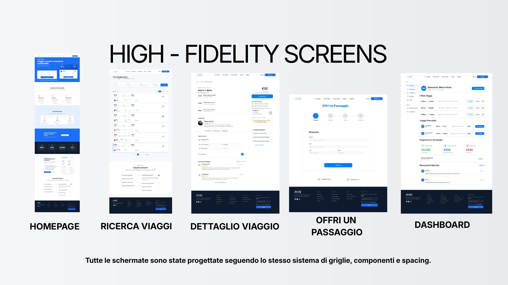

01 · Servizio
- Cos’è il carpooling
- Benefici e funzionamento
- Testimonianze
Case study · UX/UI design
Un progetto end-to-end che trasforma ricerca, criticità e bisogni in un’esperienza responsive più semplice, leggibile e rassicurante.

01 · Contesto
JOJOB facilita la condivisione dei tragitti casa-lavoro. L’analisi ha però evidenziato frizioni capaci di ostacolare l’adozione: percorsi poco chiari, processi percepiti come lunghi e pochi segnali visibili di sicurezza.
02 · Ricerca
La seconda fase di Discovery ha combinato cinque micro-interviste, un questionario con 40 risposte, empathy map e dati dell’Osservatorio JOJOB. Gli insight sono stati sintetizzati in tre personas con esigenze e livelli di familiarità digitale differenti.
Giulia cerca sicurezza e risparmio, Alessandro vuole un’esperienza guidata e comprensibile, Sara desidera flessibilità e integrazione con altri mezzi. Le loro journey hanno reso visibili i momenti in cui curiosità e interesse si trasformavano in frustrazione o dubbio.
03 · Definizione
La nuova architettura informativa è stata organizzata intorno ai due task principali — cercare e offrire un passaggio — riducendo la dispersione e rendendo più riconoscibili sicurezza, community e vantaggi del servizio.
04 · Wireframing
I wireframe sono stati sviluppati su griglia desktop a 12 colonne e mobile a 4 colonne. Homepage, ricerca, dettaglio viaggio, pubblicazione e dashboard condividono gerarchie, CTA e componenti ricorrenti.
Il wireflow verifica continuità, feedback e riduzione dei passaggi nel task principale.
05 · UI design
Il design system mantiene riconoscibile il blu JOJOB e introduce una scala tipografica basata su Inter, componenti riutilizzabili, colori semantici e stati interattivi. Focus visibili, contrasti e messaggi di errore supportano accessibilità e comprensione.
Palette primaria, neutri e colori semantici per feedback immediati.
Una gerarchia modulare per contenuti scansionabili su ogni device.
Button, form, card e badge progettati con varianti e stati coerenti.
06 · Risultato
Il redesign collega ricerca e interfaccia in un unico sistema. L’esperienza rende più evidenti le azioni principali, valorizza i segnali di fiducia e mantiene continuità tra desktop e mobile.
Prossimo passo ideale: validare il prototipo con test di usabilità moderati e misurare completamento dei task, errori e percezione di sicurezza.